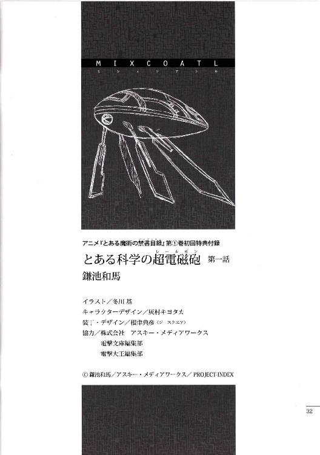
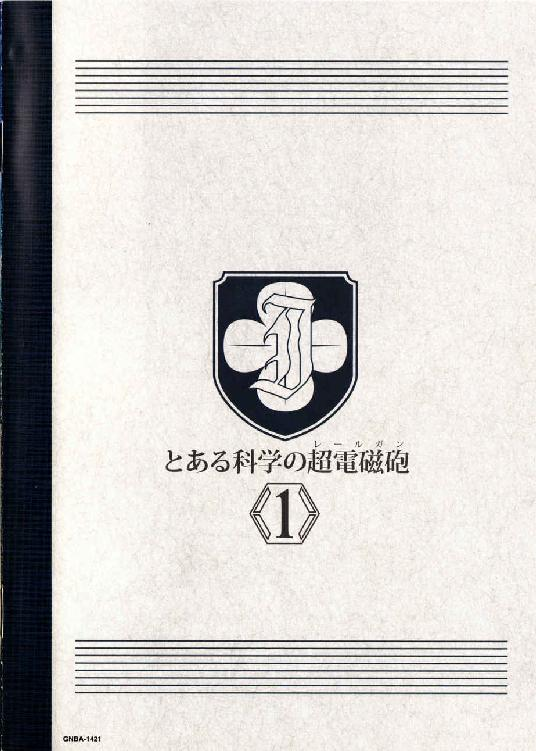

| [鎌池和馬] とある科学の超電磁砲1 | |
| 鎌池和馬 | |
| (2015) | |
|
アニメ『とある魔術の禁書目録』
第①巻初回特典付録
|
とある科学の超電磁砲
第一話
スカッとした夏日だった。
抽象的な表現である上、曖昧な擬音まで用いてしまって申し訳ないのだが、一面の青空を見上げる御坂美琴が真っ先に思い浮かべた感想はそんな簡単なものだった。肌を焼く強烈な陽射しと、湿度の低いスッキリした空気に、サンダル越しに足の裏へ伝わる柔らかい砂の感触。風に乗って流れてくるのは、波のぶつかる音と潮の匂いだった。
海だ。
カリフォルニアの海なのだ。
（んー......。飛行機だのリニアモーターカーだの色々乗り継いできたから、解放感もいっぱいだなぁ）
思わず両手を上に伸ばしてぐぐっと背筋を反らす美琴は、黒を基調に曲線的な白いラインの走った、シャチみたいな模様の競泳水着を着込んでいる。背中が大きく開き、Ｈ型のバンドで固定する方式の水着の正体は、常盤台中学能力測定用指定水泳着。オリンピック水泳選手なら目の色を変えそうなほど様々な最先端技術が詰め込まれた一着なのだが、実は美琴、この水着はあんまり好きではない。あまりにも高性能すぎて、時折本当に何も着ていないように感じられる事があるからだ。
（だぁー、ちくしょう。学校関係のイベントだから仕方なく持って来たのに、実は水着は自由だったなんてなぁ。ちゃんとパンフ読んどきゃ良かった......）
と、そんなこんなで皮膚の方が『あれ？ 今着てる？』という疑問を発し、美琴は本日何度目かのぶるっとした身震い。胸の辺りの布を引っ張ったり尻の辺りを指先でなぞりつつ、大丈夫大丈夫、これはボディペイントじゃない、と彼女は意味のない確認行為を繰り返す。
その時だった。
「みっ、御坂さーん......」
遠くの方から細く情けない少女の声が飛んできた。美琴がそちらに目を向けると、初春飾利がこちらへ走ってくる所だった。コルクらしきサンダルが細かい砂をザクザク鳴らす。頭に大量の花飾りをつけた少女は、それが何らかのアイデンティティーなのか、水着の方も薄いピンク色を基調とした、花柄のワンピースだった。思いっきり健全な一品である。
特に露出も多くない水着なのだが、初春自身はあんまり気に入っていないのか、彼女は顔全体が真っ赤だし目元に涙っぽいものが浮かびかけているし、体を隠そうとしているのか自分の上半身に両手を這わせたりしている。......ひょっとすると、妙にオドオドしているのは外国人がいっぱいの場所に慣れていないのもあるかもしれないが。
初春は周りの目を気にしながらこう言った。
「はぁあー......。御坂さんの水着はシャープで羨ましいです。私のはなんか、野暮ったいというか間に合わせというか......」
「いやぁ、そうでもないんだけどね」
学校指定の水着なんて着てる自爆組は珍しいし、と美琴は美琴でどんよりムード。そんな様子に気づかないのか、初春は自分の水着の胸元に目を落としながら、
「まさか、こんな抽選に選ばれるなんて思わなくって。水着を選んでいる時間も予算もなかったから、ホントに売れ残っているものを掴んでくるしかなかったんですよー......」
はぁー、ぶはー......と二人してため息状態。
そんな時、彼女達の元へ新たな挑戦者が乱入。初春飾利のクラスメイト、佐天涙子だ。肩よりちょっと長い程度の黒い髪に、一輪だけ花飾りをつけた、活発な少女。いつもは超能力者の御坂美琴や大能力者の白井黒子などに押されがちなのだが......、
「やっほーう、御坂さーん、初春も待っちゃったーん？」
「ッ!?」
「ッ!?」
笑顔全開で片手を振りながら近づいてくるのは、まさに脱・地味少女。控え目な体を赤系の三角ビキニに包んだ佐天は、ナットクいかない水着の二人組からすれば、まさに夏満喫ガール。しかもちょっと凝った店で選んできたものなのか、ビキニの胸元がファスナー状になっていて、フロントホックのように金具一個で固定するように作られている。
わなわなと震える初春は、主に初春の胸元辺りを注目しつつ、
「なっ、そっ、それは、佐天さん？ それは一体どういう不思議な......？」
「んふ？ ジップアップビキニと言うのだよ勉強したまえ初春君。ほらほら、なんか動くと胸元がパチッと外れそうでデンジャラスだろー？」
「ぎゃああ!! こっ怖い、同じ女として見ているだけでそれは怖いです佐天さん!!」
「大丈夫だって。実はヌーブラみたいなもんでさ、トップ全体がペタッと胸に貼り付いてんの。だからここが外れただけじゃポロリはないんだよん」
ぎゃーぎゃーと大騒ぎな初春と佐天の友達コンビを眺めながら、御坂美琴は極めて真剣な眼差しになっていた。彼女は静かにこう思っていた。
「（......。バスト自体の大きさはごまかしていないのに、外れそう、外れちゃうかも、という意識を向ける事によって、結果的におっぱいキャラの印象を強く与える......。なるほど、そういう戦い方もある訳か!!）」
と、やけにじっとりした視線を感じた佐天は、キョトンとしたままこう尋ねた。
「あのー、どうかしたんですか御坂さん？」
「おっふ!? な、何でもないわよ!!」
慌ててぶんぶんと首を横に振る美琴。
佐天は小首を傾げたが、あまり深くは言及しない。彼女は初春の水着をチラッと見て、
「そういや、初春ってオヤジ狙いのロリキャラ目指してるの？」
「うぶぅは!? なっ、何を、いきなり何を口走ってんですか佐天さん!!それは考えられる限り最悪の評価ですよ!!」
「だってー、初春の薄桃花柄ワンピースって、どう考えても可愛い女の子だよ？それも女の子から見た可愛い女の子じゃなくって、汗と涙の筋肉祭りが頭の中で思い浮かべるような可愛い女の子だよ？」
「仕方がなかったんですよ!! 私だって本当はもっとシャープな水着を着てみたかったんです!!でもセール対象コーナーに残っていたのはこれしかなかったから!!」
うぎゃああ!! と羞恥の叫びを発する初春。それを指差してケラケラと笑う佐天。さらに、実は花柄のワンピースも可愛くて良いかも、と思っていた美琴が自分のセンスのズレみたいなものを自覚してどんよりしている。
と、そこで美琴は気づいた。
「あれ？ 黒子のヤツはどうしたの？」
「ホテルの方でちょっと会いましたけど、時間かかるから先に行ってろって言ってましたよ」
初春が答えると、美琴は眉をひそめた。
「一体何に時間をかける気なんだか。海で遊ぶっつーのに化粧でもしてくるつもりか？」
「日焼けとか気にする人なのかもしれないですよん。外に出る前に、建物の中でオイルは全部塗って完全装備しておきたいとか」
佐天が適当に考えてそう言った時だった。
ぞわっ!! という、得体の知れない悪寒が三人を包む。
遠くの方が騒がしい。ざわざわという野次馬達の声を引き連れて、何者かがこちらへ近づいてくる。美琴の額から浮き出た汗の玉が、鼻の横を伝って顎へと落ちる。初春の目がせわしなく左右に揺れる。佐天の全身の毛穴がぶわっと開く。
なんか来る。
怪物がこちらへ接近してくる。
その時、純真な乙女達にはいくつかの選択肢があったはずだった。他人のふりをする、マッハで逃げる、海にざぶざぶ入ってしまう。しかし時間がなかった。彼女達は何を選ぶ事もできないまま、ただやってくる災厄に対して、覚悟も決めずに、そちらへ目を向けてしまった。
そこには、
説明不能の自主規制をまとった、肌色一色の女が立っていた。
いびゃあああ!? という甲高い悲鳴は初春のものか。十分露出の多いジップアップビキニを着ているはずの佐天が日射病のようにクラリとよろめき、何故だか美琴はタマネギをみじん切りにしたように目元が滲んだ。彼女達だけではない。周囲からも英語で『なっ、なんじゃこらーっ!!』『ありえるのか......？人類はあれを認める事ができるのか!?』『あれが日本のＳＡＭＵＲＡＩか......』などなど。普通、露出の多い水着を着た女性を見れば、どう取り繕おうが嬉しいのが汗臭い野郎というものだが、野次馬達を包むのは『あれ......もうエロとかそんな次元じゃねえ......』という未知との遭遇ムード。
人間の脳を混乱させるツインテールの女、白井黒子は、顔だけは極めてあどけない笑顔で美琴のみをロックオンすると、
「おっねえっさまーん。申し訳ありませんわね、少々準備に手間取ってしまって。ふふ、お姉様の前で情けない格好などできませんからね」
「やっ、やめろ!! 私の好みみたいに語るな!!外国まで来て何やってんのよ!?前々から思っていたけど、今日確信を持った。アンタは絶対に頭がイカれてる!!」
「あらまあ。水着なんて体の三点が隠れてりゃ十分ではありませんの？」
「......本当に、かろうじて隠れている感じですね......」
初春が絶望的な顔で呟くが、本当に何も意識していないのか、白井は顔色一つ変えない。糸と点で構成されているのは、典型的なビキニの『外枠』だけを紐で形作られた極悪水着。トップは三角形の紐の中に、Ｙの字の紐を伸ばした上で、三つに分けたゾーンの内、胸の『谷間』に近い内側のゾーンだけに布地を張ったもの。ボトムの方は逆三角の『外枠』の中に、三角形の『点』状の布を当てているだけ。後は『外枠』と『点』の間を細い紐で繋げば出来上がりだ。
飾りの紐によって胸元にあるわずかな白い肉がムチッと押し出され、もうなんか縄で縛った感まで出てくる鼻血・ザ・スペシャル仕様だった。どちらかというと、自分の意志で着るというより、他人の意志で着せられるためのものと思えなくもない。
（......しっかし、これは......後ろの方はどうなってんだろ......？）
何となく、怖いもの見たさで白井の背後に回ってみた佐天涙子は、
「ううっ!? がはげほごほ!!」
「だっ、大丈夫ですか佐天さん！ 佐天さんってば!!」
「み、見るな初春......。後ろも壮絶!! 中途半端にお尻の肉を持ち上げている分、一点に食い込むＴバックよりさらに突き抜けてる!!」
「うーん。単なるビキニの変種にすぎませんわよ？結局、水着ってワンピースかツーピースの派生しかありませんものね。スリングショットも冷静に観察すれば大した事はありませんし。肌に直接貼り付ける素材もあるのだから、そろそろ革命を起こしてほしいというのが正直な感想ですわ」
「......アンタ、ボディペイントでも始める気か......」
美琴はげっそりとした顔で呟く。おそらく佐天のジップアップビキニと同じく、簡単に脱げない機構になっているのだろうが......ぶっちゃけ、これ以上脱げようが脱げまいが、現時点ですでにアウトである。
と、かろうじて立ち直った初春飾利が、顔を真っ赤にしながらも、
「ま、まあまあ。言い争っても仕方ありません。旅の恥はかき捨てってヤツですよ」
「？？？ どの辺が恥ですの？」
「......ダメよ初春さん。こいつはすでに全部捨てっ放し。もうフォローできない......」
名門常盤台中学のエースが珍しく泣き言を漏らす。白い砂浜で打ちひしがれる美琴の横を、地元のアルバイトらしき金髪のお姉さんが（多分白井の方を）チラチラ見ながら、うわーうわーと小さく呟きつつも、それでも何とかお仕事を続けている。
そのお姉さんはサンバイザーにスポーティなビキニという格好だった。ビーチバレー選手みたいな感じのお姉さんが両手で抱えているのは、白くて四角い大きな箱だ。アイスクリームでも売っているのかと思ったが、違う。ビーチバレー風金髪お姉さんは英語でこんな事を言っていた。
「拳銃はこちらでお預かりしまーす。砂粒、海水、潮風などで自慢の相棒をダメにしたくないお客様。今なら大手八社の製品に関して、分解メンテナンスサービスも実施しておりまーす」
日本なら絶句しかねない台詞だが、こちらでは常識らしい。マッチョの黒人とかほっそりした奥様などが、黒光りするゴツい塊をアルバイトのお姉さんに手渡している。お姉さんの方はＧＰＳ機能とお客様情報を入力するチップを内蔵したゴムバンドを拳銃のグリップに巻きつけると、持っていた白い箱の中へとゴロゴロ人れていく。
わー、と絶句する佐天。
白井と初春は風紀委員の訓練で少しだけ銃器に触れた事はあるようだが、それでも驚きと違和感は隠せないらしい。美琴も呆れたようなため息をつきながら、こう呟いた。
「......来ちゃったわねぇ、アメリカに」
元はと言えば、広域社会見学というのが全ての発端だった。
九月三日から一〇日までの一週間、日本の学園都市からランダムで選ばれた学生達が、世界各地へ遠征する勉強会のようなものだ。大体二〇人一組ぐらいのグループが、一つの都市へ向かう。反対に、世界各地から日本の学園都市へ子供達を招いたりもする。
もっとも、世界各地に遠征すると謳いつつも、学園都市創設時に協力関係にあった間柄であるためか、まんべんなく各国へ派遣というよりは、アメリカの各都市にチラホラと、というパターンが多い。他の国と比べても、アメリカに派遣される学生の数はダントツだ。
「でも、佐天さんとか御坂さんとか、知り合いが一緒で助かりましたよー」
「ここって結構倍率高かったんでしょ。どこに行くか、どんな班になるかはランダムって話だったけど、確かにラッキーだったわよね」
とはいえ、実質的にはほとんど修学旅行。簡単なレポートを提出する事を除けば基本的に遊ぶ以外にやる事のない、学生からすればパラダイスそのもののイベントである。
今現在、美琴達四人の他にも日本の学生や数名の教師が同行しているはずなのだが、基本的に自由行動しかない広域社会見学では、誰がどこにいるのかあんまり良く分かっていない。一日の始まりと終わりにホテルで点呼があるぐらいである。
学芸都市のホテルで初めて集合した際、繋ぎ目をリング状のパーツで留めたビキニを着ている読心能力の少女や、背中が大きく開いたワンピース型の水着を着ている空力使いの少女などがいたが、彼女達が今どこにいるのかは把握していない。それぐらい、自由に遊べる旅行なのだ。
「それにしても、やっぱりアメリカってスケールがデカいですよねー」
佐天涙子は一面の砂浜に目をやりながら、そんな事を言った。
「これが全部、たった一本のハリウッド映画を撮るために、人工的に作られたものだったなんて。学園都市なら絶対考えられませんよ。いや、技術はあるんでしょうけど、ウチは土地不足だから」
そう。
ここはカリフォルニアの沿岸から西側へ五〇キロほど離れた洋上に作られた、直径一〇キロ程度の、超巨大な人工島だ。基本的にこの辺りの海は水深何千メートルの世界なのだが、この辺りだけは水深二〇メートルぐらいの所まで、岩場がせり上がっているらしい。その上に多くの人工物を積み上げ、仕上げに大量の砂を乗っけて作られたのが、この人工島だ。
（ハワイの辺りも人工的に砂浜を作ったって話だったけど、もうそんなスケールじゃないわよね......）
そうやって作られた人工の島はいくつかのエリアに分けられていて、今、美琴や佐天達がいるのは、一番外側のエリアだ。砂浜の向こうは人工的な遠浅で、その先は太平洋の外海一直線である。
島の名前は『学芸都市』。
娯楽と映画の大国に相応しく、全てがアトラクションで埋め尽くされた空間だった。複数のジェットコースターが絡み合うように空を走り、中心点のない不思議な観覧車が、オリンピックのマークのように互いの輪をくぐっている。ホテルの外観からゴミ箱の形一つに至るまで、全てが可愛らしく計算されたテーマパーク。海と遊びの融合を意図するこの島の中では、基本的にホテルのベッド以外は全部水着で過ごせるというぐらいなのだから徹底している。
「映画の舞台ねぇ。佐天さんはそれ観たの？」
「ええと、残念ながら。公開自体は二〇年以上前のヤツですし、なんか色々あって日本じゃ上映されてないみたいなんですよ」
佐天はあははと笑ってごまかし、
「確かＳＦ系だったと思いますよ。近未来の地球を描くとか言って、ホントに五〇年後の動植物の環境を擬似的に作っちゃったとか。ほら、学芸都市の周りって生物ガードっていう目の細かい網みたいなのに覆われてて、互いの生き物が出大りできないように作られているんですって」
「ふうん」
美琴は適当に水平線の方へ目をやって、
「それで、リニアモーターカーの海底トンネルでアメリカ本土と繋いでんのね。少しでも景観を統一するために」
「今でこそリニア技術に乗り換えていますけど、撮影当時は大変だったみたいですよ。片道で一時間以上かかってたみたいですし」
リニアモーターカーと言うと、未来技術っぽく聞こえるかもしれないが、すでに中国の方では実用化されている。日本の学園都市であまり見ないのは、わざわざリニア技術で結ぶほどの長距離路線を必要としないためだ。
それより美琴としては、透明な海底トンネルの中を、たくさんのお魚を見ながらズァーッと進む景色の方が、無駄にダイナミックで興昧深かったりする。
「で、映画の撮影が終わってから、このまま捨てるのはもったいないからって話になって、人工島そのものを世界最大のテーマパークに作り替えてしまったとかいう話でしたわよね」
「そうね。分かったからとりあえず離れろ露出狂」
できるだけ他人でいたいエロ水着をむぎゅーっと遠くへ押しやる美琴。
初春は頭の花飾りを風に揺らしつつ、
「確か、州の海洋環境保護条例で使わない施設を放ったらかしにするのはアウトって話があったんですよ。で、こんな大きな施設を取り壊すのにどれだけお金がかかるか分からないって映画会社が怒っちゃったんですって」
ヤシの木を見上げながら、彼女は言う。
「そしたら、『なら逆に、今でも使ってる施設だよ』って事にしちゃえば良いじゃんとかって屁理屈が出てきて、ちょうど映画会社主催のテーマパークの候補地を探していた時期だったから、それ持ってこいこっちでやる、とかいう結論が出ちゃったとかいうらしいですけど」
しかし、その屁理屈でこれだけ巨大なテーマパークができてしまうというのだから恐ろしい。美琴は頭上に目をやり、大空を縦断するジェットコースターを眺めながら息を吐いた。
と、そこへ、
「それは違うね！ 野暮ったい花柄ワンピースを着ている生け花少女よ!!」
「はぐぅわ!?」
真後ろ方向から唐突に赤の他人から水着のセンスを疑われ、地味にショックを受ける初春飾利。わざわざご丁寧に日本語で話しかけてくれた謎人物の正体は、金髪碧眼のアメリカ人のお姉さんでばいんばいんだった。
年齢は一八歳ぐらいだろうか。色白の肌に青い瞳、そしてヘアバンドで雑に持ち上げられた、カラメルみたいな色の混じった長い金髪。機能性重視のツーピースの水着の上から映画会社のロゴの入ったＴシャツを着ているだけなのだが、その盛り上がった膨らみが何とも、
「でっ、デカい！！！？？？ 馬鹿じゃないのデカいよデカすぎるそこまで行くとなんか怖いっつってんのよやんのかコラァ!!」
「み、御坂さん大丈夫です！ 別にあのおっぱいは人間を食べたりはしません!!」
佐天は美琴の両肩を掴み、腹に力を込めてこう叫ぶ。
「それとご安心を！ こんな事でもあろうかと、あたし、女の子のおっぱいを簡単に大きくしてくれる『巨乳御手』っていうウワサに心当たりがあるんですーっ!!」
「おおおおおおおおおおおおおおおおおおおおおおおおおおおおおおおおおッ!!」
「まっ、待ってください御坂さんに佐天さんも！それは絶対なんかマズいトラブルに巻き込まれるに決まっています!!」
「......あのー、人の話を聞いてくれる？」
控え目に言われて、ハッ!! と美琴は我に帰る。
金髪碧眼の爆乳はちょっとテンションの調節に苦労しながら、
「学芸都市の成り立ちには、もう少しだけ複雑な事情があるという事よ。もし良かったらこの私が教えてあげようと言っているのよ成長過程の少女達!!」
ドスビスブスッ!! と、いちいち人のコンプレックスを刺激する爆乳。キレればキレるほど惨めになる乳差に圧倒されつつ、美琴はこめかみをわずかに震わせる。
「......っつーかアンタ、どちら様？」
「ハッ!? まさかさんざん勝手に解説をぶつけてきた挙げ句、じゃあ説明代一〇ドルねとか迫ってくる商売の人では!?」
佐天が警戒心剥き出しで割り込んできたが、それに対して爆乳はふふんと鼻を鳴らしながらこう答えた。
「私はこういう者ですどうぞよろしく、と名刺の一つも差し出したいけど、ここは海！紙切れなんぞ持ってこれるか!!という訳で、失礼を承知で口だけ自己紹介するね。ビバリー＝シースルー。これでも一応映画監督をやっているの」
ホントだろうか......？ と美琴は思わず表情に出そうになる。見た目は一八歳かそこら。本当だとしたら、単なる天才少女とかそんな次元ではない。映画監督というのが具体的にどういうものか、プロの世界をイメージできない美琴だが、何となくただの才能だけでなれるものでもないような気がする。
（まぁ、嘘でも良いか）
旅の恥はかき捨て。金や命に関わらない限りは、騙されてやるのも一興である。
一方で、映画監督を名乗る爆乳はニヤリと笑い、
「君らはあれね。学園都市からやってきた日本人とかいうヤツ」
「ありゃ。分かるんですか？」
佐天がキョトンとした顔で質問すると、ビバリーは一度深く頷き、それから白井黒子の顔を指差して、
「いくらアメリカでも、あれはないよ。あんな極悪な水着は売っているのは学園都市ぐらいね」
「......アンタ、自由の国を超えちゃってるってさ......」
「何でもアメリカが一番と思ってもらっては困るという事ですわね」
ワースト方向の一番を争ってどうする、と美琴はため息をつくが、当然のように白井は気にしていない。
「で、何で映画監督さんがこんな所にいるの？」
「つまり、そういう事よ」
「？」
砂浜でいきなり胸を張られても、美琴にはサッパリだ。はるか頭上を走り抜けるジェットコースターから聞こえるキャーという歓声が、ちょっと間抜けに聞こえる。
美琴のポカンとした表情を受けて、金髪の爆乳はコホンと咳払いし、
「この学芸都市は、大手映画会社の手で作られたというのは知っているよね？何のためか。答えは新しい撮影技術を模索するため、という事よ。だから私みたいな関係者がいっぱい集まっている訳ね」
ビバリーは人差し指を軽く振りつつ、
「映画は娯楽よ。そして、アメリカ最強の外貨獲得手段でもあるの。単刀直入に言って、アメリカの国家予算の数％かを支えているほどだから。これぐらいのものを作ってしまうのも、まぁ不思議な話じゃないのよ」
「はー。流石はハリウッド、砂漠に街を作っちゃう人の考え方ですねー」
初春は素直に感心したが、ビバリーはくっくっと笑う。
「ところが、アメリカの映画産業には一つの不安材料があるの。それが日本の学園都市」
「？」
「この国の娯楽大作というのは、結局ＣＧとＶＦＸの世界よ。中には作品性とか芸術性とか語る輩もいるけど、大ヒットを生み出すにはやはりある程度の派手さは必須となる訳。だから、ほら。世界最高の科学技術を誇る学園都市が全力で映画を作ってしまったりすると、ウチの作品が対照的にショボく見えてしまうの。ええと、新しい携帯電話が出てくると、古い機種が途端にダサく見えたりするでしょう。別に今までの機種に悪い所はないのにね」
どういうジェスチャーなのか、ビバリーは人差し指をくるくる回した。
佐天は首を傾げて、
「ホントにそうなのかな......？ あたし、映画って誰が出演してるかで決めちゃうんだけど」
「うん。だからそういう部署もあるよ。情報と財力で世界中の俳優を探したり、誘ったり、契約状況を制御したりという芸能部署が。これも全部、日本の学園都市対策としてね」
ふわー、と初春がそのまんま驚きの声を上げる。
白井は眉をひそめて、
「でも、学園都市ってそんなに映画産業に力を入れていましたかしら？」
「だから、本格的に参入されて一気に差をつけられる前に、何としてでも撮影技術の一点だけは学園都市に勝っておきたいのよ。すごいよー。映画会社も映画系投資ファンドも上院も下院も、みーんな目の色変えて」
ふふん、とビバリーは笑った。
自称映画監督の天才少女は言う。
「そんな訳で、私としても科学サイドの本場、日本の学園都市にちょっと触れてみたくてね。こうして声をかけたという事。何かしらの刺激が得られる事を願ってね。君達が観光中に何気なく使っている物でも、私達にとっては大きな価値がある場合も考えられるからね」
「......あの、無駄だと思うわよ。私らだって所詮ただの人間なんだから。別に宇宙人って訳じゃないし、そんな技術的異文化交流を期待されても困るってば」
美琴はげんなりしながらそう答える。
しかし、ビバリーはキョトンとした顔で、白井黒子のエロ水着を上から下まで眺めた後、
「......本当に？」
「いやあのごめん。お願いだからこれを参考にしないで」
と、そんな事を言っていた自称映画監督のビバリー＝シースルーだったのだが、
「って、あれ!? さっきの爆乳はどこ行ったのよ!!」
「なんか『ああ何故この局面で仕事が......』とか何とか言いながら、ふらふらとどこかへ行ってしまいましたわよ」
美琴の疑問に、白井もキョロキョロと辺りを見回しそう言った。
彼女の空間移動をフルに使えば捜し出す事もできるかもしれないが、そこまでこだわる必要も感じられない。
「案内するって自分で言ったのに。もしかして、仕事人間なんでしょうか」
初春が適当に言う。
一方、ビバリーの背中を見送りながら、佐天はぼんやりした調子で呟いた。
「......すげーな学芸都市って。流石は映画の街だ......」
「いやあれ、ホントに監督だったの？」
美琴としては、実はあれ、テーマパークの係員......というか、アルバイトの演者だったんじゃないだろうか、と思い始めていた。そういう雰囲気込みで、映画の街というアトラクションを作っているのでは、と。
ところが、佐天はキョトンとしたままこう言った。
「え？ あれ、本物のビバリー＝シースルーですよ。映画雑誌で見た事ある顔ですもん。ほら、去年のカンヌで絶賛されてた新人天才監督。未成年の女の子が並居る強豪を薙ぎ倒したってニュースにもなったじゃないですか」
ぶっふぅううううッ!? と御坂美琴は思い切り吹いた。
「なっ、ちょ、待っ、だぁああーっ!! もしかして『鉄橋は恋の合図』の人!?それならそうと、ぐまァああああ!!サーイーンーッ!?」
いくら叫んだ所で、もはや爆乳は群衆の中に紛れて見つけられそうにない。美琴の悲惨な叫び声だけが街に響いていく。
「ユーロ系の恋愛映画の超新星って扱いでしたけど、こっちに来てたんですねー。やっぱ派手な作品も撮ってみたいのかな？」
「......み、妙に冷静ね、佐天さん」
「んー。あの人の映画は綺麗なんですけど難しくって、ガキのあたしにゃ良く分かんないっすよ。御坂さんって、ああいう主観的な恋愛映画がいけるクチなんですか？」
「べっ、べべべ別に？ そういうジャンルだけが好きって訳でもないわよ？」
顔を赤くした美琴が顔の前でパタパタと片手を振ったその時だった。
ドッゴォ!! という爆発音が、唐突に美琴の鼓膜を打った。
「ッ!! ───ッ!?」
いきなりの事に耳を押さえるのも忘れ、背中を叩かれたように驚く美琴。音源のした後ろの方を振り返ると、陸地を直線的に切り抜いたような運河の上に、海賊船が浮かんでいた。その側面に取り付けられた砲台から、うっすらと煙が漂っている。
船首に足を乗せ、両手を上に挙げた船長らしきド派手なヒゲの大男が、英語でこう叫ぶ。
「テメエら雑魚どもを守ってやる義理はねえが、このまま見捨てんのも寝覚めが悪りぃ!!ただ働きしてやるから死ぬまで感謝しやがれ!!」
それが有名な映画に出てきた名台詞だと美琴が気づいた直後、周囲にいた観客達が一斉に叫んだり拍手したり指笛を吹いたりした。その反応を見て、船長役の演者は満足そうに頷く。
そして、さらに海賊船の砲台が連続的に火を噴いた。
いつの間に現れたのか、美琴達のいる陸地を挟んだ反対側───砂浜の向こうに広がる海に浮かんでいた別の帆船も、応じるように砲を発射する。
ドンゴンドドン!! と鼓膜どころか頭まで揺らすような轟音に包まれる。
ようやく美琴は両手で耳を押さえながら、すぐ近くにいる佐天や白井達に向かって叫ぶ。
「ちょ、何これ!! まさかアトラクションショーの一つなの!?」
「おおおおおーっ!! 『海賊どものスカーレット』に出てくるスカル号とブロード号だーっ!!やっぱ映画の街のアトラクションはこうでなくっちゃーっ!!」
と、何やら佐天は美琴の言葉は耳に入っていないようで、この轟音の中、両手を上げてはしゃぎまくっている。
実際に海賊船からデカい砲弾が発射されているのではなく、空砲が鳴るのと同時に、相手の船にあらかじめ仕掛けてあった爆薬を起爆しているのだろう。それでも重厚な海賊船がバラバラに破壊されていく過程は確かにすごい。
......のだが、美琴としては『自分でイベントを選んで参加する』のではなく『強制的にイベントに参加させられる』というやり方はやや不満である。
（やっぱり私は、もっと静かでゆったりした恋愛映画の方が合ってるかもなあ......）
美琴は少し首を傾げて、
「......それにしても、あの運河にしても、浜辺の方にしても、あんな所に船を浮かべられるような深さがあったかしら？さっきまで普通にみんな泳いでいたような気がするけど」
「イベント前に客を立ち退かせた上で、海底が沈むか開くかする装置でも動かしたんじゃありませんの？元々、ここはカリフォルニアから五〇キロ離れた海の真ん中ですもの。海中の岩場の上に作られた人工島とはいえ、足が届かない方がむしろ普通ですわよ」
そんなもんか、と美琴は適当に納得する。
しばらくすると海賊船同士の戦いに決着はついたらしく、片方の船から乗組員達がダイブした後、船自体がぶくぶくと沈んでいく。船自体に潜水機能がついているのか、下り坂のレールが敷いてあるのか、トリックの方は不明だ。そんな無粋な事など気にせず、テーマパークの常連客らしき人達が一斉に拍手を送っている。
と、今度は別の騒音が襲ってきた。
ギィィイイイイ!! という甲高いエンジン音が美琴の耳を打ったのだ。
車のものではない。
上空を一直線に突き抜け、陸側から海側へと飛んでいく音源の正体は、漆黒に染められた超音速ステルス戦闘機だ。
五機ワンセットで構成された編隊を指差し、佐天が大雑把に喜ぶ。
「ぐわーっ！ 『エイリアン戦争』に出てきたラヴィーゼ飛行隊だ!!やっぱアメリカってすげーっ!!ハリウッドの国はホントに銃とか兵器とか愛してやがるなーっ!!」
「いや、私はああいうのよりもっと人間の感情を繊細に扱う作風の方が......ごにょごにょ......」
美琴は何やら呟いているが誰も反応していない。
初春は空を見上げて、わー、と感心半分呆れ半分な声を出す。
「映画ではF-22をべースに、 UFOと戦うために改良したって事になってましたけど、やっぱり本物なんですかね、白井さん。一機一五〇億円以上するとかっていう話だったと思いますけど」
「どうせ映画仕様のデコレーションを施して特殊な形にしてしまうんですもの。エンジン辺りの形から察するに、F-35辺りの兵装を外したアクロバット競技モデルではありませんの？」
それにしても、現役の戦闘機を何機も購入して、撮影用の改良を行い、実際に大空へ飛ばしているのだ。日本なら実現するしないどころか、会議に出る事すらないスケールだ。
「おーっ。なんかあっちの方で戦ってる!!」
佐天が砂浜の向こうにある水平線の辺りを指差しながら大声を出す。
爆薬を使ったショーの一環だろうか、複数の戦闘機が鋭角な弧を描いてビュンビュン飛んでいる。曲線的な細い飛行機雲みたいなものは、模擬ミサイルの発射の軌跡か。他にも、機銃らしき発射光も見えた。ドバババ!!とかいう複数の音の連続ではなく、ドジャーッ!!という一つのまとまった音がここまで聞こえてくる。空砲にしてもただではない。随分と豪勢な演出である。
件のラヴィーゼ飛行隊が何と戦っているかと言うと......、
「？ ......何だろ、あれ？」
この中では一番詳しそうな佐天が、首をひねっていた。
その正体は海面にいた。全長五メートル前後の楕円形の機体だった。楕円形と言ってもラグビーボールのようなものではなく、木でできたカヌーの上に、逆さまにしたカヌーをぴったり合わせたような、かなり鋭角的なものだ。さらにボディ前方の左右から、大小二枚ずつの羽が生えた、トビウオのような変な機体。いや、機体は下向きの羽根の先端の部分だけを海面につけ、水を蹴るように進んでいる所を見ると、アメンボといった方が近いのか？とにかくトビウオのようなアメンボのような、そんな変な機体は水そのものに反発するように、猛烈な速度で海を突き進む。あまりの速度に、トビウオが通った後に一歩遅れて、大量の海水が尾を引くように吹き飛ばされていった。
トビウオは細かいギザギザの軌道で空からの機銃の乱射を避けると、返す刀でミサイルらしきものを発射。白い飛行機雲のようなものが空を裂く。
「あんなの見た事ないなぁ。初春、あのトビウオって何の映画に出てきたヤツか知ってる？」
「い、いいえ」
「映画会社協賛のテーマパークだし、なんか情報公開前の新作のプロモかもしれないなー。ていうか、ショーの舞台が遠すぎるよー。......ハッ!?まさか有料で双眼鏡を貸し出しているとか、そういうセコい商売をしているんじゃ!?」
佐天はあちこちをキョロキョロ見回しながらそんな事を言う。
（......？）
一方で、美琴はわずかに眉をひそめていた。隣にいる白井を見ると、やはり彼女もほんの少しだけ、訝しげな表情になっている。
空中の戦闘機と、海上のトビウオのアトラクション。
一見するとそれだけの話なのだが、冷静に考えてみると、少しおかしい所がある。
そう、
（あのトビウオ......どうやってあんな速度を出しているのよ？）
戦闘機と互角に渡り合う船舶なんて開いた事がない。ホバークラフトを含めても、世界最速の船舶は時速九〇キロ前後が関の山なのだ。マッハ一......時速一二〇〇キロ以上で爆走するなど、普通に考えればまずありえない事だ。
一応、あのトビウオは純粋な船舶ではなく、海面を浮かんでいるようなのだが、それはそれで問題がある。海には波があり、海面は水平一直線ではない。あれだけの速度の中、常に揺れ動く海面の上で、機体の姿勢制御を完璧に行っているだけでも驚きだ。
「でも、やっぱりアメリカってスケールが違うなぁ。日本じゃたとえ海の上でも、あんな風にバカスカ爆発させたりできないでしょ」
佐天涙子は、あれは爆薬を使ったショーだと考えているらしい。
辺りにいる他の観光客も、大体似たようなものだ。中には臨場感が足りないとかもっと派手にしろとか、そんな野次を飛ばして笑っている連中もいる。
しかし美琴だけが、胸の中にわずかな疑問を抱いていた。
彼女は遠い水平線の辺りで繰り広げられる戦いを見ながら、わずかに思う。
（まさか......？）
バン！ ボン!! と複数の爆発音が連続する。
例のカヌーを上下二つにくっつけて、前方左右に四枚の羽をくっつけたトビウオのような機体の横っ腹に、戦闘機のミサイルが突き刺さり、起爆したのだ。
バランスを崩したトビウオは勢い良く海水を引き裂いて、
「う、そ......ッ!?」
美琴の体が強張ったその時だった。
制御を失ったトビウオは波打ち際に乗り上げると、そのまま砂浜に突っ込んできた。
学芸都市防空飛行隊、通称ラヴィーゼ飛行隊の五機は、海面から二〇〇メートル辺りの低い空を、何度も鋭角的なカーブを切りながら飛び交っていた。
敵の名はミシュコアトル。
どこかの言葉で『雲海の蛇』とか呼ばれているらしき、四枚羽の敵は水の上を滑るような動きで、最新鋭戦闘機の狙いから高速で逃れていく。
数はわずか二機。
にも拘らず、五機編成のラヴィーゼ飛行隊は未だに敵の機体へ掠り傷すら負わせられない。相当波が高いのに、『雲海の蛇』は四枚の羽を器用に動かし、それらの落差をゼロに保ったまま、さらに滑らかかつ素早い動きで、海の上を突き進む。
しかも信じられない事に、『雲海の蛇』は一般的な軍用艦艇と違って、鋼板などは使われていない。カヌーを上下二つ合わせたように鋭角的な本体は樽のように木で作られていたし、他の部分にしても布や黒曜石ばかり。金属部品が一つもないのだ。
現代兵器の常識を覆すような木や布の塊は、しかし最新鋭戦闘機のロックから外れ、細かい横移動を織り交ぜて、ギザギザした軌道を作り出す。
操縦桿を握るパイロットは思わず舌打ちした。
『ちょこまかと!!』
逃げ回る海上の『雲海の蛇』へ狙いを定め、機銃を掃射する。ミシンのように走る弾痕のラインは、しかし『雲海の蛇』にはわずかに届かず、海水だけを巻き上げていく。
ただし、機銃のラインから逃げようとするため、『雲海の蛇』は右側へ逃げざるを得なくなった。単調で分かりやすい動き。そこへ戦闘機の方はミサイルでロックする。画面上の印が、ロック完了の表示へ切り替わる。
即座に発射。
機体から解き放たれたミサイルが、凄まじい速度で海面へ襲いかかる。鋭角的な弧を描く爆発物は、『雲海の蛇』を巻き込む形で爆発、大量の海水を一気に巻き上げ、白いカーテンを作り出す。
『くそ、やったのか!?』
大量の白い水飛沫の向こうを覗こうとするも、戦闘機はその速度の関係で、あっという間にそのポイントを突き抜けてしまう。
その時だった。
『馬鹿野郎、上だ!!』
仲間からの無線に、ギョッとした表情になるパイロット。
真上に影が差したと思った時には、すでに四枚の羽を大きく広げた『雲海の蛇』が追っていた。カヌー二つを上下に合わせたような本体に取り付けられた細かい穴が、銃口のようにパイロットの体を直に狙う。
（一瞬で......跳んで回避したってのか!?）
『野郎!!』
並の機体なら、なす術もなくコックピットを撃ち抜かれていただろう。
だがとっさに、パイロットは操縦桿を握る手に力を込める。
グルン!! と戦闘機が縦に回転した。
ウィリーのような、機首を真上へ持ち上げる特殊な挙動だ。
空気抵抗によって強烈なブレーキがかかる事を承知で、頭上の『雲海の蛇』へ強引に鼻先を向ける。機銃やミサイルの狙いを、強引に合わせたのだ。
一肩の兵器の矛先が、互いに向く。
その睨み合いは、一秒にも満たない。
『ぐオオおおおおおおおおおおおおおおおおお......ッ!!』
パイロットは叫びながら、操縦桿についた機銃の引き金を引く。轟音と共に『雲海の蛇』の前部で木片が散る。オレンジ色の火花が散る。しかし大破はしない。『雲海の蛇』の方も、その本体に闘いた小さな穴からミサイルのようなものを発射した。
ドシュッ!! という発射音を闘いた気がした。
一瞬だった。
白い飛行機雲のようなものを噴き出す鏃のようなものが、戦闘機に向かって放たれた。それは戦闘機の左の水平尾翼に突き剌さると、鋼鉄の翼を容赦なくへし折り、空へと吹き飛ばす。
パラシュートを使うんだ、と無線越しに叫ぶ同僚の言葉を聞いたが、パイロットが応じる事はなかった。
大破した戦闘機を横目で見るように、大ジャンプの浮力を失った『雲海の蛇』がようやく海上ヘと落下していく。
翼を失った戦闘機は木の葉のように回転する。
しかしそれは、尾翼を砕かれた事で制御を失ったのではない。
パイロットの技量によって、落ちていく『雲海の蛇』を照準に捉えるための挙動だった。
『クソッたれが......』
大きく円を描く宙返りとは違い、ほとんど戦闘機の中心に串を刺してグルッと回したような動きだった。逆立ちのような体勢でピタリと機首を落下中の『雲海の蛇』へ突きつけたパイロットは、最後の力を操縦標へ集中させる。
『やられっ放しで済ますと思ってんじゃねえぞ!!』
咆呼と共に、空対空ミサイルが『雲海の蛇』ヘと襲いかかる。
凄まじい速度で、トビウオが突っ込んできた。
美琴の体が強張った時には、すでにトビウオは波打ち際を乗り上げ、砂浜に突撃していた。大量の砂が巻き上げられ、トビウオはさらに進み、アスファルトの道路を切り裂き、火花を散らして、海水浴客用の個室シャワーヘ激突した。
砕け散った壁の一部が、ヒュンヒュンと回転しながら空を舞う。長さ三メートル以上の巨大な瓦礫が、観光客の頭上へ降り注ごうとして、
「ッ!!」
直後、美琴の前髪がバチッ!! と光を放った。
彼女の足元にあった白い砂が盛り上がる。いや、正確には砂に含まれる大量の砂鉄。それらは漆黒の剣と化すと、まるで蛇のような動きで数十メートルも空中を突き進み、落下してくる瓦礫を容赦なく吹き飛ばす。
最初、観光客達はポカンとした表情を浮かべていた。
それから数瞬経って、わあああああああ!!という叫び声の連続が鼓膜を打った。
ただし、
「すっげーっ!! やっぱり本場の学芸都市は違うなぁ!!」
「何あれ？ 何の宣伝？ いつ公開なの？」
「わざわざ遠くでショーを始めたのは、こういうスリルを演出するためだったんだな」
「いやぁ、あんな所にも役者が混じっていたなんてなぁ。映画の街は本当に油断ならない」
「あの子誰、どこの子？ アジア系の『演者』って珍しいけど、もしかして新人のプロモとかじゃないよね？」
「っていうか、もー最低。口の中まで砂まみれなんですけどー」
次々と英語で放たれるのは、歓声。
それを耳にして、ただ美琴一人だけがゾッとした悪寒に包まれる。
（アンタら......何言ってんのよ......？）
もちろん美琴はショーの役者などではない。今のは本当に、一歩間違えば大惨事になっていたはずだ。しかし彼らは気づかない。『映画の街』という特殊な空間の中では、どんなに不思議な事があっても、お化け屋敷の延長線上みたいな感覚で処理されてしまう。
そこまで考えて、美琴は唐突に嫌な想像をしてしまった。
もし仮に、今の瓦礫を防がなかったとしたら、彼らは目の前の大惨事をどう処理しただろう？自分のすぐ横で血まみれになった人が倒れたとして、それすらも『いやー。こんな所に役者が混じっていたなんて』『迫真の演技だなぁ。流石はハリウッド技術の結晶。血糊だってすごいリアルじゃないか』とかいう風になったりしないだろうか。
もちろん、被害者と一緒に遊びに来た人は知っているだろう。これは演技じゃないと。本当に苦しんでいるのだと。しかしそれを誰が信じる？
『あそこで泣き喚いている人も含めて、みんな役者なんだろう』と思われたら、事件そのものが存在しない事になってしまう。さらに極論を言えば、泣き喚いている人がみんなの目の前で次のアトラクションの『役者』になったら、それで全ての騒ぎが止まる。
アトラクション。
究極の平和ボケ。
目の前にあっても、誰もそれを真実と信じない世界。
まさか、この学芸都市は何かとてつもなく危険なものを潜ませているのか。
「......、」
その時だった。
美琴の鼓膜に、ギギギギギ、という耳障りな音が響いてきた。そちらを見ると、個人シャワーの建物に突っ込んで止まったはずのトビウオが、もぞもぞと震えるような動きで瓦磯から顔を出した所だった。
こうして見ると、改めて異様な機体だというのが分かる。金属部品を使わず、樽のような木の本体と、布や黒曜石などを使った四枚の羽。あんな素材で、どうやればあんな高機動性を引き出せるのか、美琴の頭脳でも推測できない。
しかし、今はテクノロジーの議論している場合ではない。
問題なのは、あのトビウオが観光客達のど真ん中で再び動き出した事だ。
（ま、ずい......）
周りの観光客は危機感を全く抱いていない。わざわざ近くに寄って、携帯電話のカメラを向けているヤツまでいる。
トビウオの、カヌーを二つ上下にくっつけたような体が大きく動く。その本体に空いている穴が、銃口のように携帯電話を向けている観光客に向く。
先ほどの『ショー』の中では、そこからミサイルのようなものが発射されていたはずだ。
「この......野郎!!」
「おっ、お姉様!?」
白井が止めるのも待たず、美琴は砂を蹴ってトビウオに向かって勢い良く走る。前髪から火花が散る。一〇億ボルトの雷撃の槍が、一直線にトビウオの脇腹に激突する。
ズバン!! という轟音が詐裂した。
衝撃にトビウオのボディがわずかに横滑りし、その側面が若干焦げ付いた。
しかし止まらない。
トビウオの体が観光客から、美琴の方へ向け直される。本体の穴から、ファシュッ!!という奇妙な音が聞こえた。
「くそ、やっぱ実弾!?」
ギョッと体を強張らせる美琴。
水蒸気の帯をまとい、高速で放たれたのはミサイルか。とっさに美琴は向かってくるその一撃を雷撃の槍で撃ち落とし、
（細かい理屈は分かんないけど、水素系の椎進剤ってトコかしら）彼女は素早く足を動かし、さらにトビウオヘ接近する。
（凝縮した水素を、空気中の酸素と混ぜて火を点ける。だから爆発後に水素と酸素が結びついて水になるから、水蒸気の帯がついてくるって訳か!!）
ここに来て余計なリスクは避けようと判断したのか、トビウオは走ってくる美琴から遠ざかるように、四枚の羽を脚のように使って大きく後ろヘ下がった。街路樹代わりに植えられたヤシの木をメキメキとへし折りながら、トビウオは砂浜から内陸部へと逃げていく。速度はそれほどでもないが、昆虫のような挙動はそれだけで不気味さを与えてくる。
そうこうしている内に、トビウオは建物と建物の間へと潜り込んでいく。
「だぁくそ！ さっさと海に帰ってくれりゃ良いものを!!」
美琴は走りながら、自分のサンダルの踵へ手を伸ばす。ストラップに留められていたものを勢い良く引き抜く。まるで特殊部隊のナイフのように取り出されたのは、長さ一〇センチ程度のプラスチックでできた、拳銃のマガジンのようなもの。ただし入っているのはゲームセンターのコインだった。一種のコインホルダーである。
（っつーか、根本的に何なのよアレ!? 人が入ってんの？それともロボットみたいにプログラムで動くモンなの!?）
トビウオは陸地で動く事を考慮して作られていないのか、水上にあった機敏な動きはない。木と布と黒曜石でできた羽を自重で押し潰しながら、カヌーを二つ上下に合わせたような本体を地面に擦り付けて移動している。
美琴は手の中にあるコインホルダーを意識しながら、
（超電磁砲は......ッ!!）
彼女は電磁力を応用し、ゲームセンターのコインを音速の三倍で射出できる。それを使って一刻も早くトビウオの動きを止めるのが、被害を出さないための最良の手段となるのだが、
「ッ!?」
親指を使ってコインホルダーからゲームセンターのコインを弾き出そうとした美琴の動きが、一瞬固まる。今までサンダルに挟んでいたのが災いしたのか、コインホルダーのスプリングに砂が詰まってコインが出てこなくなったのだ。
（くそ、何でこんな時に......ッ!?）
人工的に敷き詰められた白い砂の上には、無数のテントが設置され、一種の商店街のようになっている。全部観光客向けのお土産屋さんだ。やはり状況を全く理解していないのか、水着を着た家族連れが、美琴とトビウオを眺めて歓声を上げている。
そんな光景に美琴が苦い顔になった時、トビウオが動いた。
ぐるん!! と。
唐突にカヌーを二つ上下に合わせた本体を高速で一八〇度回転させると、ボディ前方にある二対の羽の内、長い方の二枚羽を使って起き上がり、短い方の二枚羽を肉食獣の前脚のように使って、美琴を押し潰すように、いきなり覆い被さってきたのだ。
それは動物用のバネ仕掛けの罠か、カマキリの捕食を思わせる素早さだった。
「しま......ッ!?」
慌てて横へ跳ぼうとしたが、美琴はそのままトビウオの真下へ。仰向けに転ばされ、二枚の短い羽に両手を固定されてしまう。
焼けた砂が背中一面に突き剌すような熱を伝えてくるが、今はそれどころではない。
カヌーを二つ合わせたような本体の下腹が見えた。先ほどまで鋭角的に見えたボディが、吊り天井のように思えてくる。そのカヌーの下腹が四角く切り抜かれていた。
（何これ......コックピット!?）
美琴はギョッとしたが、今はそれより重要な事がある。
おそらくこの四角い穴は、緊急脱出用のハッチみたいなものなのだろう。本体の中に誰もいないのが分かる。自動操縦みたいなモードにしたまま、乗っていたパイロットは逃げ出したのだろう。
（くっそ!! いつの間に!?）
美琴は歯噛みするが、その時、四角い脱出ハッチの向こうで、何かが点滅しているのが見えた。博識の美琴でも読めない、どこの言葉かも不明な象形文字と、その下にある、四桁の数字の羅列。象形文字の方はお手上げだが、数字の方はカウントダウンするように刻一刻と減っていくのが分かる。
美琴の全身に嫌な予感が走る。
（まさか......自爆装置とかってんじゃないでしょうね!?）
先ほど撃ち落とした、水素系の燃焼剤を使ったミサイルの存在が頭に浮かぶ。機体に残されたミサイルをこの場で全部爆発させるだけでも結構な被害は出るし、まして、自爆専用の液体水素でも搭載されているとしたら......。
「ちっくしよう！ 冗談じゃないわよ!!」
美琴は顔を真っ赤にするほど力を入れて両手を動かそうとするが、がっちりと固定されていて動かない。超電磁砲に使うコインホルダーも、押し倒された衝撃で少し離れた所へ転がっている。
巨大なトビウオに押し倒されたまま、美琴は首だけを動かす。平和ボケした観光客は全く逃げる気がない。すげー、リアルに作られてるなー、とかいう間の抜けた声が耳についたし、一〇歳前後の女の子はトビウオに興味を示したのか、まるで機体に触れようとしているかのように近づいてくるのが見える。
脱出用ハッチの向こうに見えるカウントダウンが本当に自爆装置のものなら、間もなくそれら全部が消えてなくなる。みんなで楽しい思い出を作るためにやってきた家族連れも、アイスクリームをせがむ小さな子供も、稼ぎ時で忙しく働いているお土産屋さんの店員も、それら全てが平等に、血の海に沈んでいく事になる。
そこまで考えて、美琴はブチリという音を聞いた。
自分の歯が、唇を噛んだ音だと気づくのに、数秒もの時間を必要とした。
「上等じゃない......」
両手は押さえつけられて動かない。超電磁砲に必要なコインホルダーも離れた所に落ちている。間もなく起動する自爆装置を前に何もできないはずの美琴だが、そんなものは考慮に入れない。学園都市の名門・常盤台中学のエースをナメてはいけない。一つ二つの切り札を封じられた程度で潰れるお姉様ではないのだ。
ぶわっ!! という音が炸裂した。
それは美琴の周囲にある、白い砂浜から大量の砂鉄が蠢く音だった。
黒い粉末の塊は、トビウオを中心に、半径五メートル前後で噴き上がる。それは観光客を寄せ付けぬバリケードであると同時に、この場を逆転するための最後の鍵。膨大な量の砂鉄は美琴の意志を受けて全方位からトビウオヘ襲いかかると、その表面をコーティングするように、三六〇度隙間なくピッタリと埋め尽くした。
（超電磁砲のコインが手元にないってんなら......）
美琴は笑う。
その前髪から、高圧電流の存在を示す青白い火花が散る。
（アンタ自身が、この私の砲弾になりなさい!!）
ドバッ!! という轟音が炸裂した。
美琴に覆い被さっていたはずの巨大なトビウオが、そのまま大空へ射出される。
全体を砂鉄にコーティングされたトビウオが、勢い良く吹き飛ばされた。もちろんコインと違って音速の三倍もの速度は出ないが、とりあえず今は問題ない。巨大なトビウオは砲弾のように斜め上方へ真っ直ぐ飛んでいくと、高度二〇〇メートル辺りで重力に捕まった。大きく弧を描く野球の遠投のような軌跡を描いたトビウオは、観光街の一エリアを丸々またいでいき、速い水平線の向こうへ消えていき、
そして、
全ての音を消し飛ばすような、大爆発が巻き起こった。
かなりの距離が離れていたにも拘らず、お土産屋さんのテントがいくつか崩れて砂浜に広がった。水着の観光客達は最初驚いたようだが、潰れたテントの中であたふたしている店員さんを指差して笑ったりしている。どこまで行っても、徹頭徹尾、彼らにとっては刺激的に演出された、安全なショーに過ぎなかった。
（くそっ、あのトビウオに乗ってたヤツはどこ行った!?）
焼けるような砂浜から起き上がり、背中や尻についた白い砂をパンパンと払っていた美琴は、そこでふと小さな女の子と目が合った。彼女は小さな親指を上げて、英語でこんな事を言った。
「お姉ちゃん、良い仕事」
「......そりゃどうも」
ビバリー＝シースルーは双眼鏡を顔から離した。
彼女はゲストとして、この学芸都市にやって来ている。だからこそ、ラヴィーゼ飛行隊や、あの変なトビウオみたいな機体が織り成すアトラクションショーのスケジュールなどは全く把握していない。
しかし、そんな蚊帳の外にいるビバリーにも分かる事がある。
あの競泳水着の少女は、学芸都市側のスタッフではない。
どういう経緯があったかは知らない。ともあれ、何らかの紆余曲折があって、飛び入り参加でショーの舞台に上がってしまったらしいようだが......。
「は、はは」
ビバリーは乾いた笑みを浮かべていた。
双眼鏡を掴む手に、じっとりとした汗が浮かぶ。
「流石は学園都市の能力者。こりゃあ、ＣＧだのＶＦＸ程度じゃ敵わないわ」
瞳に宿るには焼けるような好奇心。
ゴクリと喉を鳴らしたビバリーは小さく舌を出して乾いた唇を砥めながらこう言った。
「......何にしても、楽しそうなヤツに出会えて満足かな」
アニメ『とある魔術の禁書目録』第①巻初回特典付録
とある科学の超電磁砲 第一話
鎌池和馬
イラスト／冬川基
キャラクターデザイン／灰村キヨタカ
装丁・デザイン／根津典彦(ジースクエア)
協力／株式会社 アスキー・メディアワークス
電撃文庫編集部
電撃大王編集部
Ｃ鎌池和馬／アスキー・メディアワークス/PROJECT-INDEX

